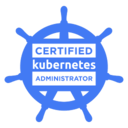
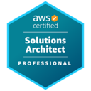
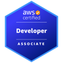
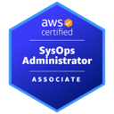
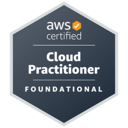
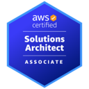

About
Younsung Lee
DevOps Engineer. Github email.
Work Experience
DevOps Engineer | Coinone
May 30, 2023 ― Present (1 yr 1 mo)
AWS, GCP, Kubernetes, Observability, CI/CD, Terraform, Infrastructure Ops
- Manage and operate 6 EKS clusters in a multi-stage environment: experienced EKS versions v1.24 to v1.27.
- Operate Kubernetes policy engine Kyverno and Node Termination Handler. 1 2
- Improve scalability by applying pod autoscaling based on Throughput Per Seconds metric using KEDA in the production environment. 1
- Automate repetitive operational tasks.
- Operate CI/CD pipeline based on Github Actions Workflow and ArgoCD.
- Build and operate RabbitMQ, MSK Cluster and OpenSearch Cluster. 1 2
- Build and operate Github Enterprise Server, Github Enterprise backup utilities and Actions Runner Controller. 1 2
- Containerize github enterprise backup server and migrate workload from EC2 to kubernetes cronJob for leveraging dedicated EKS cluster.
- Develop and release backup-utils helm chart as a maintainer. 1
- Provision and operate multi-account AWS infrastructure using terraform modules.
- Integrate private networking between GCP and AWS to connect GCP Service APIs from EKS Pods.
DevOps Engineer | Greenlabs Financial
Sep 5, 2022 ― Apr 7, 2023 (7 mos)
AWS, Kubernetes, Istio, Observability, CI/CD, Terraform, MLOps, Infrastructure Ops
- Acquired electronic finance business license #2022-483 after building multi-account AWS infrastructure for 3 months from September to December 2022. 1
- Managed and operated 2 EKS clusters in a multi-stage environment: experienced EKS versions v1.24 to v1.25. 1
- Provisioned and operated multi-stage AWS infrastructure using terraform.
- Optimized multi-account infrastructure and reduced monthly AWS cost from $6800 to $4800, 30% monthly cost savings from Jan 2023 to Mar 2023.
Cloud Engineer | Watcha
Feb 14, 2022 ― Aug 5, 2022 (6 mos)
AWS, Kubernetes, CI/CD, Terraform, Infrastructure Ops
System Engineer | KDN
Dec 16, 2013 ― Feb 11, 2022 (8 yrs 2 mos)
On-premise, Linux administration, VMware Cluster administration, Storage administration, Backup and Recovery, Monitoring, Infrastructure Ops
- Orchestrated the uninterrupted operation of VMware cluster environments, guaranteeing stability and high availability.
- Automated routine operational tasks using python and bash script.
- Collaborated closely with the development team to understand their virtual machine provisioning needs.
- Provided technical support for virtualization-related incidents and challenges, consistently ensuring prompt issue resolution.
- Collaborated with vendors to address hardware and software issues, resulting in minimal disruptions to operations.
- Installed and configured backup agents for VMs, executing OS and database-level backup and recovery procedures using EMC Networker.
- Out of job due to military service, ROKAF from Nov 2014 to Nov 2016.
Education
BSE, ICT Applied | Chosun University
Mar 2018 ― Feb 2022
Certification





